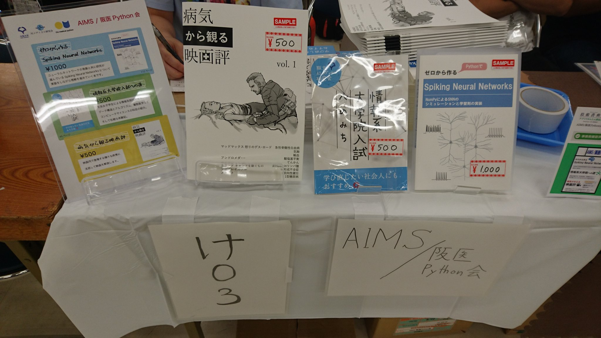
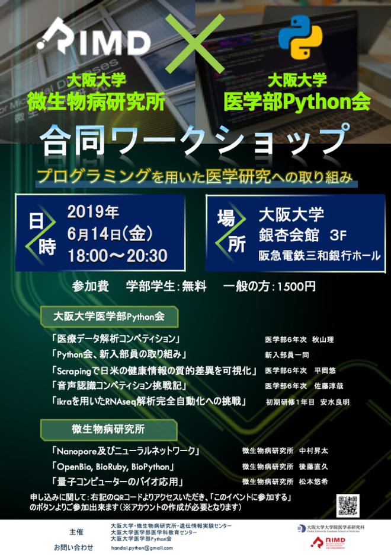
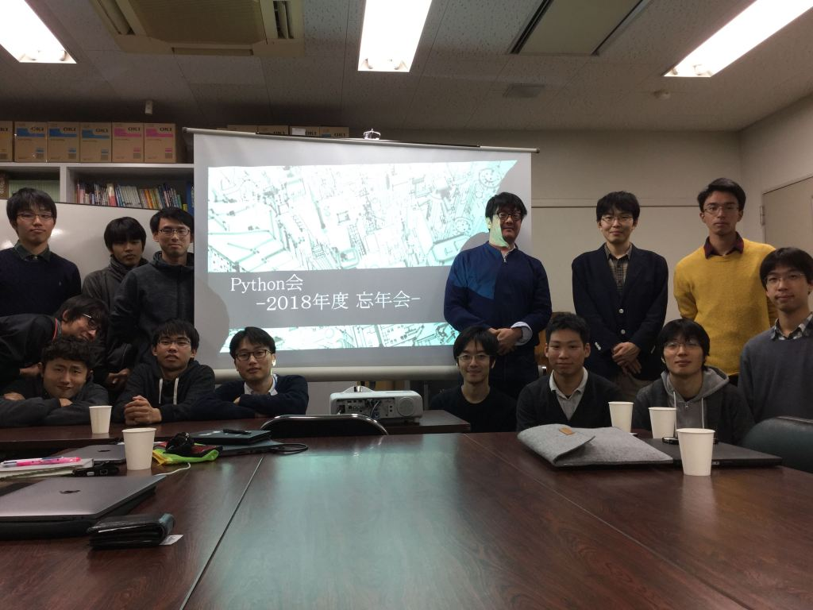
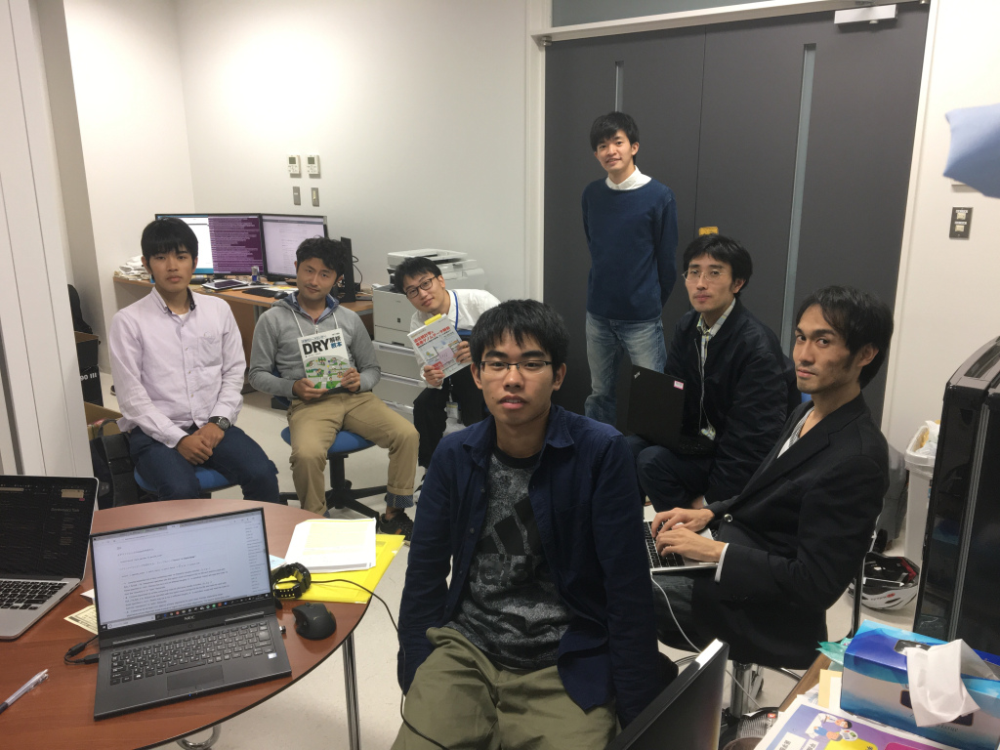

活動内容
学習・研究
バイオインフォマティクス
バイオインフォマティクス (bioinformatics) は bio (生物学) と informatics (情報科学) を合わせた学問分野です。 昨今の医学生物学研究では、現象はデジタルデータとして観測され、コンピューターサイエンスのアプローチで解析されることが増えてきました。 bioinformaticsは核酸、タンパク質、画像など、様々な大規模データをコンピューター上で扱い、疾患や生命現象の理解を目指します。
Python会では bioinformatics会 という勉強会を定期的に開催しており、バイオインフォマティクスに関する知見を共有しています。 勉強会の成果は、個々のメンバーの研究やPython会内におけるプロジェクト (RNA-seq pipeline ikraの共同開発など) 、及び外部との共同研究などに応用されています。
また、バイオインフォマティクスの勉強を進める上でバイオインフォマティクス技術者認定試験の受験を奨励しており、試験の直前期には臨時の勉強会を開催しています。
機械学習・統計学
機械学習 (machine learning) は、データに基づいてコンピュータを学習させ、従来の単純なルール設定による計算などでは困難な複雑なタスクの実行を可能にすることを目標とする学問分野です。 機械学習の一分野であるDeep learningの目覚しい発展により、近年では機械学習のことを通俗的に人工知能やAI (artificial intelligence) と呼称する場合も多くあります。 機械学習は社会に浸透しつつあり、様々な分野への、ひいては医療への応用も急速に進んでいます。
Python会では個々のメンバーの研究に機械学習を応用すること、および将来において機械学習に基づいた診断・治療支援システムを開発あるいは運用できる医師となることを目標として機械学習の勉強会を開催しています。 さらに、KaggleやSignateなどのデータサイエンスコンペティションに個人またはPython会内のチームで参加しています。
統計学 (statistics) は、医学を含め様々な分野で用いられている学問です。 上述の機械学習を正しく理解し活用するためには統計学の知識が必須です。 統計学が深く関わる医学の分野として疫学や遺伝統計学などが挙げられますが、いかなる研究をする場合も統計学は理解しておくことが求められます。 さらに実臨床においても、統計を理解し文献を正しく理解できることは必要不可欠です。
統計学の勉強を進める上でPython会内では統計検定の受験を奨励しており、検定試験の直前期には臨時の勉強会を開催しています。
競技プログラミング
競技プログラミング (competitive programming) は、「問題」として要求される動作を速く正確にこなすプログラムを素早く書き上げることを競う頭脳競技です。 上位で競うためには、プログラミング言語はもちろん、それを用いて高度な処理を行うための様々なアルゴリズムにも習熟する必要があります。 これらにより、バイオインフォマティクスや機械学習の分野などでも、できることが大きく広がります。
Python会ではプログラミングスキルの向上と趣味を兼ねて、この競技プログラミング (主にAtCoder) に多くのメンバーが取り組んでいます。 競技自体は基本的に個人での参加となりますが、Python会内では競プロ会という勉強会を開催して解法の勉強や議論などをしています。 また、AtCoderの解答状況を毎週・毎月自動で集計し、Python会メンバー内でのACランキングを共有して切磋琢磨しています。
ワークショップ等の開催
Python会は内部に限った勉強会だけではなく、外部の方々も参加していただけるワークショップ等の勉強会・交流会の開催も行っています。開催をする上ではConnpassを活用し、参加や資料の共有を円滑に行えるようにしています。
医学科学生用計算サーバの管理運用
2019年度後期より新たに大阪大学医学部医学科に導入された学生用計算機 (Core i9-9900X, GeForce RTX 2080Ti x2, RAM 128GB, storage 22TB) の管理運用を、管理委員会を組織して担当しています。
(2020年度より、会員に限らず医学科学生は申請のうえ利用できるようにする予定です。)
過去の活動
2019/12/22 奈良県立医科大学ハンズオン
奈良県立医科大学にて機械学習、bioinformatics、競技プログラミングなどのハンズオンを行いました。

2019/12/15 2019忘年会
忘年会兼1年間の成果発表会を行いました。 2019年も1年間多くの方々に支えられて、会の発展ができたと思っております。

2019/10/20 「生命科学者のためのDr.Bonoデータ解析実践道場」読書会
北梅田ビルにて 「生命科学者のためのDr.Bonoデータ解析実践道場」読書会が行われました。

2019/09/22 技術書典7
池袋サンシャインシティにて行われた技術書典7にAIMSと合同でサークル参加しました。6年の秋山が『病気から観る映画評』、3年の山本が『ゼロから作るSpiking Neural Networks』をそれぞれ執筆し、頒布しました。

2019/06/14 大阪大学微生物病研究所 × 阪医Python会 合同ワークショップ
大阪大学銀杏会館にて大阪大学微生物病研究所との合同ワークショップを行いました (Conpass)。

2019/02/25
実験医学3月号にPython会について触れたエッセイが掲載されました。羊土社ホームページでも読むことができます。 Opinion 第105回 Pythonで医学に貢献を

2018/12/26 第1回バイオインフォマティクス可視化セミナー
東京理研AIPで開かれた第1回バイオインフォマティクス可視化セミナーにて6年の安水がpython 会の活動報告報告を行いました。

2018/12/19 signate&マイナビstudentcupアフターイベント
東京の新宿ミライナタワーでマイナビコンペのアフターイベントが行われました。その中で、メンバーの金子さんが1位となり解法の発表を行いました。他のメンバーも数人参加しており、とても勉強になりました。

2018/12/14 忘年会＆冬の研究交流会
大阪大学医学系研究棟にて研究発表会も兼ねた忘年会が行われました。基礎配属期間の３年生の研究発表が聞けてとても楽しい会でした。

2018/10/23 RNA-seq会②
pseudo-alignment法を用いたRNA定量ツールであるKallistoを使ったパイプラインの解説をしました。

2018/10/03 RNA-seq入門①
近年の医学研究では欠かすことのできない技術である、RNA-seq解析の基礎を勉強しました。カツ丼でかつをいれました。

2018/09/20 低学年会
低学年会向けの勉強会が行われました。題材はkaggleで有名なtitanic号生存者データで、pythonを用いたテーブルデータ解析の基礎を学びました。

2018/09/07 秋の研究交流会
大阪大学医学部研究棟にて、秋の研究交流会が行われました。お酒も交えながら、それぞれの先進的な研究発表と活発な議論が行われました。